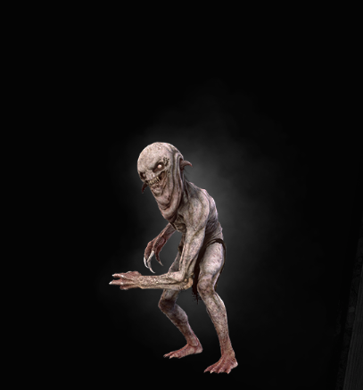

|  |
Bestiary Description:Take heed, gents, there's nekkers under this here bridge. If you all cross at once, without slowing or stopping, there's nothing to fear. But if your cart throws an axle and you get stuck out there... Well, close your eyes and pray to Melitele.
— Kurt Hammerbach, city guardsman in Vengerberg
A lone nekker is harmless. Five are dangerous. Ten can kill even a veteran monster slayer. Particularly troublesome are the larger, stronger individuals known as warriors, as well as the rare breed of nekkers known as phoocas. |